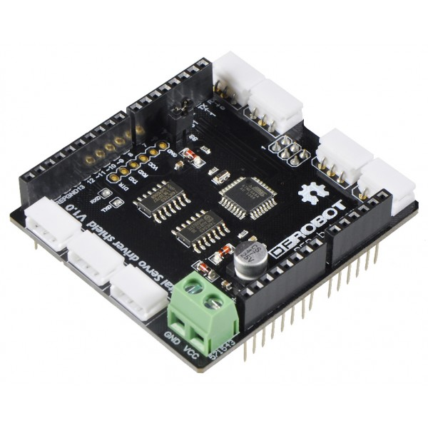

- Note
- It was an explicit decision to pack everything needed in one headerfile - readability is granted by the doc
-
This code was written for the Arduino UNO R3 used with the Smart Servo Shield and allows to copy-paste Code running on a qfixSoccerboard
- Warning
- This code comes with absolutely no warranty
- Precondition
- This Header file was created to port Codes running on the qfix SoccerBoard [DynamixelBoard etc...] directly onto the Arduino UNO R3 [with Smart Servo Shield].
To use it you'll have to replace all qfix-related header-files [*.h] with the following: #include "/path/to/eBoard.h"
If you wan't to use the I2C extensions you should have this two lines the beginning of your code:
While in development you shouldn't disable any macro... If you change to release mode, write (as a minimum) the following before all includings:
#define EBOARD_DEBUG_MODE 0x0
Macros
There are multiple macros you can manipulate the behaviour of this header [full list is here: [ 🐲 ] Macros and Constants]:
- Note
- The constants will appear with their default values in codeSnippets -> be careful with assumptions ;)
General
Pins
Smart Servo Shield

This is the smart-servo shield this code was written for its connected by SPI with the UNO R3. In case of an emergency it is possible to hardcode a connection interface to drive the AX-12A Servo directly from the arduino... but this is very expensive :/
- Note
- to use the motors properly you have to connect the Board with a ~12V power supply!
Philosophy
On small projects I prefer the single-file header!
Your able to 'manage the includings' via the preprocessor constants
- Note
- There is no internal reset command on the Arduino. To 'create' a remote reset mechanism use the onBoard Reset-Pin!
Async task execution
The Arduino is a single core processor. That means it isn't possible to do multiple tasks at once.
To enable async task execution eBoard provides this mechanism (write this before including the eBoard header!).
The execution cycle is EBOARD_PWM_SPE seconds and the method will be invoked after the resend of the Motor-PWM value.
#define REPT_TASK
void rept_task(void){
}
- Warning
- Don't put any endless loop etc. in this method! The execution time has to be lower than EBOARD_PWM_SPE seconds !
Tutorials